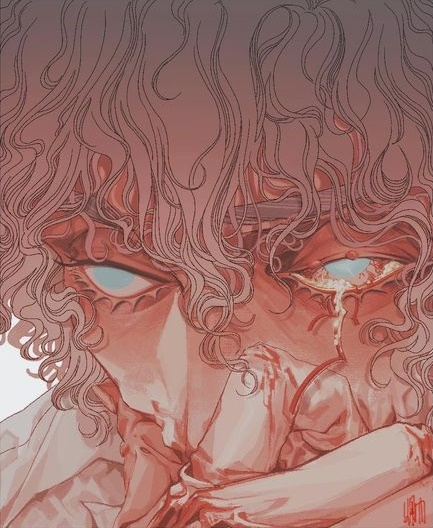

My Rose
The Rose Of Versailles
Vivimos en la oscuridad, matando el preciado tiempo.
Buscamos corazones solitarios y viviendo fuera de lugar...
Vivimos en la noche, conectados y separados a la vez, como una luz que nos guía.
El romance mata el corazón... Sin embargo
¿Cómo podría ser yo quien te dejara morir? Contigo, me siento vivo.
Ahora mis manos sostendrán tu afilado corazón, pero eso no importa.
Porque sangraré por ti, Versalles.

Hecho por
Alumna: Hernández Kristyn.
Legajo: 91416/3.
TecnoMultimedia 1